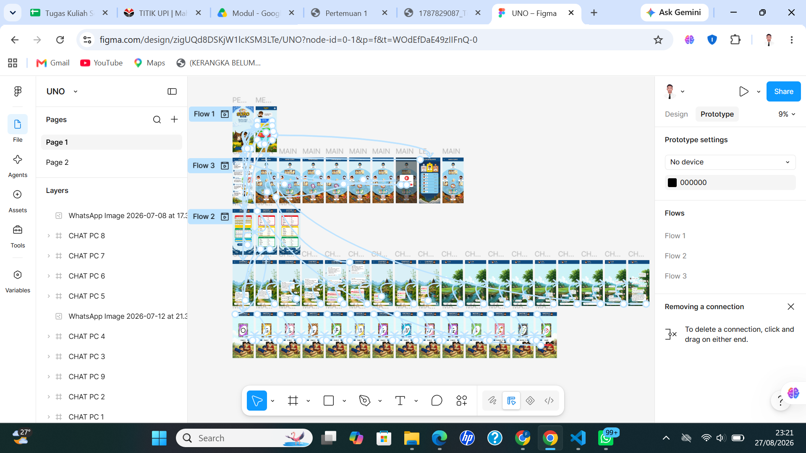
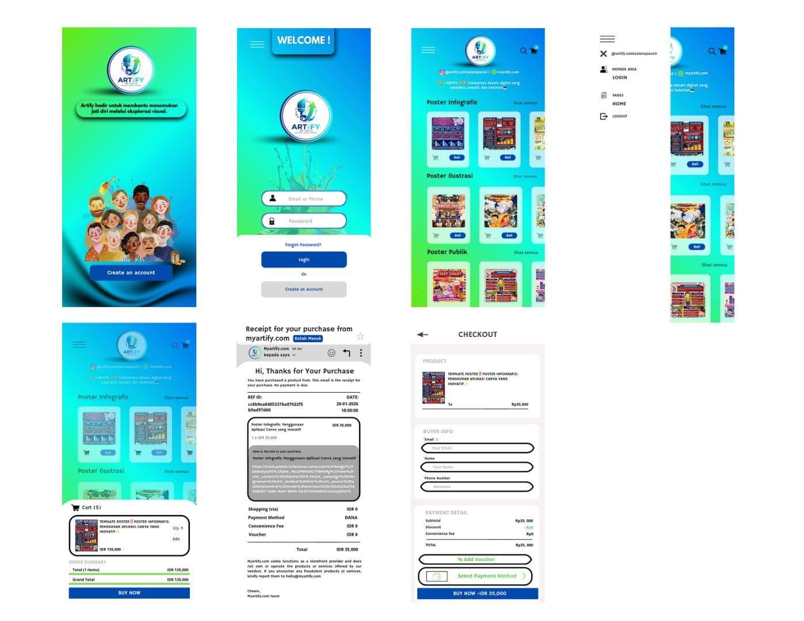
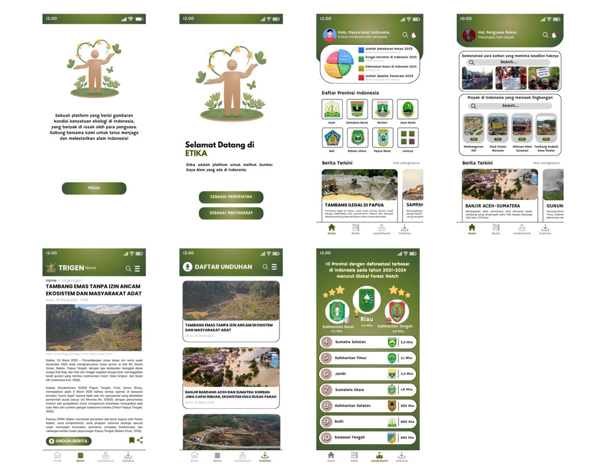
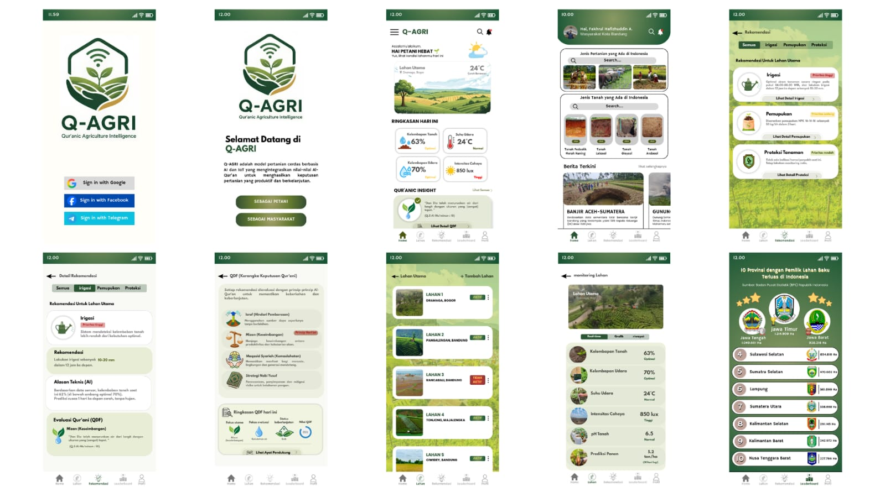
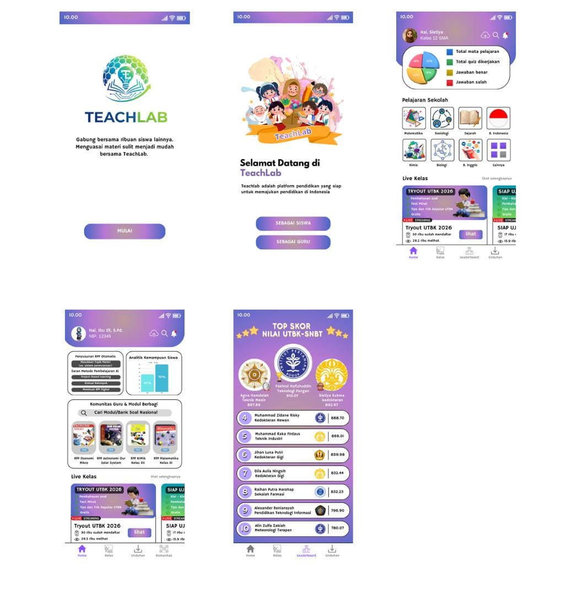

Berikut adalah beberapa project sederhana yang pernah atau sedang saya kerjakan.

Tampilan game ini menampilkan lingkungan desa 2D bergaya pixel art, dengan karakter utama, rumah, jalan, kebun, dan berbagai elemen lingkungan. UI/UX berfokus pada eksplorasi pemain, pergerakan karakter, interaksi dengan lingkungan, serta pengalaman bermain berbasis petualangann.

UI/UX UNO menampilkan alur permainan kartu UNO, mulai dari halaman utama, permainan, kartu pemain, chat/interaksi pemain, hingga informasi dan hasil permainan. Desain juga dilengkapi prototype flow yang menghubungkan setiap halaman untuk menggambarkan alur interaksi pengguna dalam permainan.

UI/UX ARTIFY menampilkan platform jual beli karya desain digital, seperti poster infografis, ilustrasi, dan publikasi. Fitur utamanya meliputi login, katalog produk, keranjang belanja, checkout, metode pembayaran, serta bukti transaksi pembelian.

UI/UX ETIKA menampilkan informasi kerusakan lingkungan, berita terkini, proyek yang berdampak pada lingkungan, daftar provinsi, artikel berita, daftar unduhan, serta leaderboard kondisi lingkungan di Indonesia. Tampilan juga disesuaikan untuk pengguna masyarakat dan pemerintah.

UI/UX Q-AGRI menampilkan informasi pertanian, kondisi dan monitoring lahan, rekomendasi irigasi/pemupukan/proteksi tanaman, jenis tanah dan tanaman, berita pertanian, serta data leaderboard pertanian. Tampilan dirancang sederhana dengan navigasi yang mudah agar pengguna dapat mengakses informasi dan mengelola lahan dengan lebih praktis.

UI/UX TeachLab menampilkan pembelajaran sekolah, materi dan kelas, latihan/tryout, analisis kemampuan siswa, komunitas guru, informasi kegiatan pendidikan, serta leaderboard nilai siswa. Tampilan dibuat untuk mendukung kebutuhan siswa dan guru dalam proses pembelajaran.
| Ringkasan Portofolio Project | |||
| No. | Nama Project | Detail Project | |
| Teknologi | Status | ||
| 1 | Website Game Analisis Perancangan Sistem Informasi | HTML | Selesai |
| 2 | UI/UX SUNO (Sunnda UNO) Aksara Sunda | Figma | |
| 3 | UI/UX Marketplace ARTIFY | ||
| 4 | UI/UX Lingkungan Alam ETIKA | ||
| 5 | UI/UX Ketahanan Pangan Q-AGRY | Canva | Dalam Pengembangan |
| 6 | UI/UX Techlab | ||
Tertarik berdiskusi? Hubungi saya!
© 2026 Fakhrul Hafizhuddin Anwar